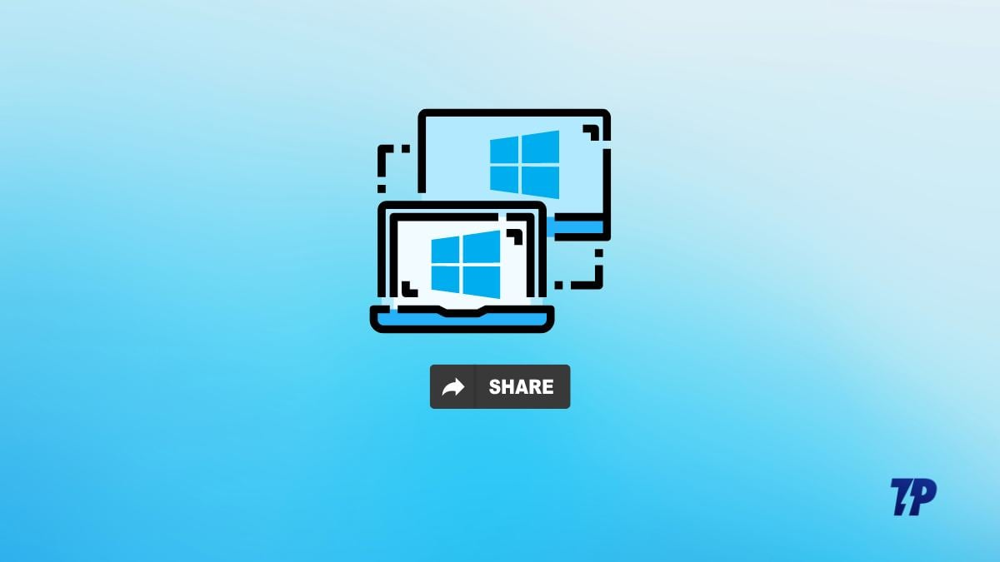
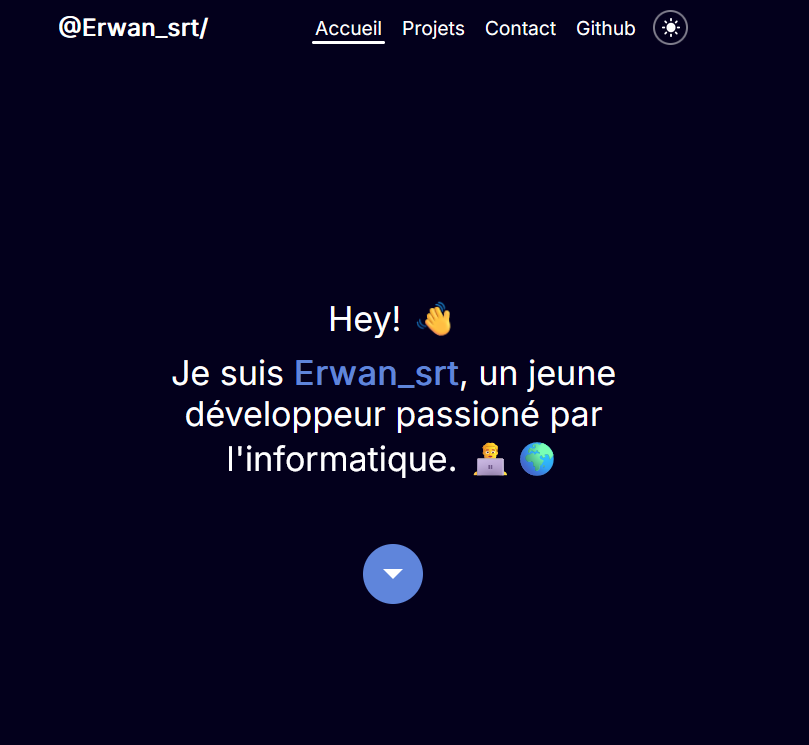

▶︎ Github, c'est quoi ?
(25/09/24) Vous avez déja peut être entendu parlé de github, mais savez vous réelement à quoi sa sert et se que c'est ? (explication d'une technologie particulière)

▶︎ Controler votre ordinateur à distance !
(25/09/24) J'ai développer un programme à l'aide du language python, permettant de controler un ordinateur, executant le programme, à distance depuis un navigateur web. Ce projet n'est malheuresement plus maintenant car le language python et les technologie utilisé n'étaient pas les plus optimal se qui rendaient le tous assez lent (~10fps).

▶︎ Mon nouveau portfolio !
(25/09/24) Dans le but d'un projet scolaire, j'ai crée se magnifique portfolio en pure css native. Ce projet ma permis d'approfondir mes compétences en web disign et surtout de m'amumser ! Loyerss
Loyerss @72g
@72g